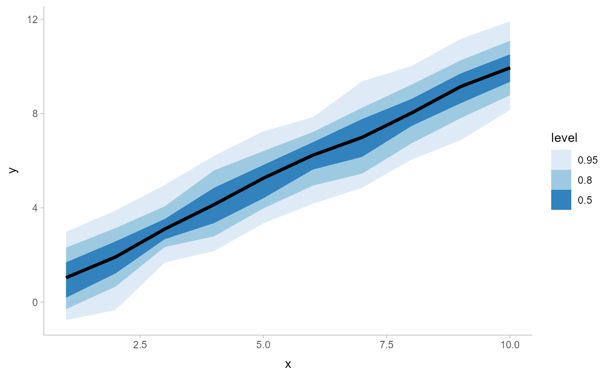

Line + multiple probability ribbon plots (ggplot stat)
Source:R/stat_lineribbon.R
stat_lineribbon.RdA combination of stat_slabinterval() and geom_lineribbon() with sensible defaults.
While geom_lineribbon is intended for use on data frames that have already been summarized using
a point_interval() function, stat_lineribbon is intended for use directly on data
frames of draws, and will perform the summarization using a point_interval() function;
stat_dist_lineribbon is intended for use on analytical distributions through the dist,
arg1, ... arg9, and args aesthetics.
stat_lineribbon( mapping = NULL, data = NULL, geom = "lineribbon", position = "identity", ..., interval_function = NULL, interval_args = list(), point_interval = median_qi, .width = c(0.5, 0.8, 0.95), na.rm = FALSE, show.legend = NA, inherit.aes = TRUE, .prob, fun.data, fun.args ) stat_dist_lineribbon( mapping = NULL, data = NULL, geom = "lineribbon", position = "identity", ..., n = 501, .width = c(0.5, 0.8, 0.95), na.rm = FALSE, show.legend = NA, inherit.aes = TRUE )
Arguments
| mapping | Set of aesthetic mappings created by |
|---|---|
| data | The data to be displayed in this layer. There are three options: If A A |
| geom | Use to override the default connection between
|
| position | Position adjustment, either as a string, or the result of a call to a position adjustment function. |
| ... | Other arguments passed to |
| interval_function | Custom function for generating intervals (for most common use cases the |
| interval_args | Additional arguments passed to |
| point_interval | A function from the |
| .width | The |
| na.rm | If |
| show.legend | Should this layer be included in the legends? |
| inherit.aes | If |
| .prob | Deprecated. Use |
| fun.data | Deprecated. Use |
| fun.args | Deprecated. Use |
| n | Number of points at which to evaluate |
See also
See geom_lineribbon() for the geom version, intended for use on points and intervals that have
already been summarized using a point_interval() function. See stat_pointinterval() /
stat_pointintervalh() for a similar stat intended for point summaries and intervals.
Examples
library(dplyr) library(ggplot2) tibble(x = 1:10) %>% group_by_all() %>% do(tibble(y = rnorm(100, .$x))) %>% ggplot(aes(x = x, y = y)) + stat_lineribbon() + scale_fill_brewer()tibble( x = 1:10, sd = seq(1, 3, length.out = 10) ) %>% ggplot(aes(x = x, dist = "norm", arg1 = x, arg2 = sd)) + stat_dist_lineribbon() + scale_fill_brewer()